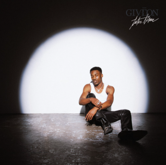

My most listened to songs of my first semester of college were “Girls Need Love - Remix” - Summer Walker, Ft. Drake, “Nobody Gets Me” - SZA, “Like I Want You” - Giveon.
My first semester at Coastal Carolina shows that I stepped into college ready to grow, adapt, and find my place in a new community. Even when the transition felt overwhelming at times, I pushed through the challenges and learned how to balance academics, social life, and the responsibilities that come with independence. I built connections with classmates, teammates, and campus resources, showing that I am someone who doesn’t just survive change, I actively shape it into something meaningful. Overall, my semester reflects resilience, curiosity, and a willingness to keep improving.
I think these smooth, emotional, r&b songs can say a lot. For example, in high school I listened to a lot of this kind of music, but these songs in particular are soft and sentimental. In the beginning I was homesick, but with these comforting songs by my side, they helped me overcome the complex obstacle that was my first semester ever as a college student.
